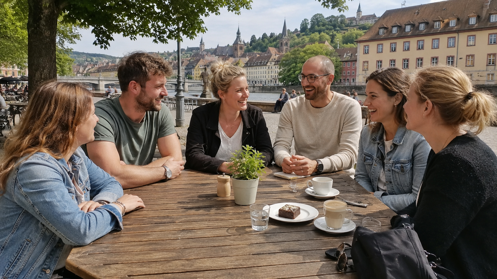

Neue Freundschaften
Kein Dating.
Lerne Menschen aus deiner Region kennen – für ehrliche Freundschaften, gemeinsame Unternehmungen und eine kleine Gruppe, in der man sich wirklich wohlfühlen kann.Lerne Menschen aus deiner Region kennen – für ehrliche Freundschaften, gemeinsame Unternehmungen und eine kleine Gruppe, in der man sich wirklich wohlfühlen kann.
Nicht irgendeine Gruppe. Eine, die zu dir passt.
Nach deiner Gruppenzusage beginnt „Mein Q“.
Mein Q ist dein geschützter Bereich innerhalb von LAVUQ. Sobald deine Gruppe feststeht und du zugesagt hast, findest du dort deine Gruppe, euren privaten Chat, die Terminabstimmung, Feedback und den direkten Sicherheitsbereich.

So ist eine LAVUQ-Runde aufgebaut.
Klare Abläufe, kleine Gruppen und ein sicherer Rahmen – damit das Kennenlernen entspannt und nachvollziehbar bleibt.
Vier Teilnehmer
Die eigentliche LAVUQ-Gruppe besteht aus vier Personen. Begleitpersonen kommen auf Wunsch zusätzlich mit.
Begleitperson erlaubt
Jede Person darf bei jedem Treffen eine vertraute Begleitperson mitbringen.
Erstes Treffen öffentlich
Das erste Kennenlernen findet an einem öffentlichen und gut besuchten Ort statt.
Mindestens 3 Treffen
Eine Runde läuft sechs Wochen. In dieser Zeit sind mindestens drei persönliche Treffen vorgesehen.
Maximal 5 Versuche pro Treffen
Kommt nach fünf verbindlichen Versuchen kein Treffen zustande, wird die Runde beendet.
Freundschaft im Fokus
LAVUQ steht für Freundschaften, neue Kontakte und gemeinsame Unternehmungen – nicht für Partnersuche.
Gemeinsamkeiten statt Zufall.
Du bewirbst dich für eine kleine Freundesgruppe. Wir betrachten deine Angaben im Gesamtbild und stellen eine passende Gruppe zusammen.
Kleine Gruppen
Vier Menschen lernen sich gemeinsam kennen. Das nimmt Druck raus und macht Gespräche natürlicher.
Freundschaft im Mittelpunkt
Keine oberflächliche Auswahl nach Bildern oder Popularität. Entscheidend sind Interessen, Vorstellungen und die Gruppenkonstellation.
Echte Treffen
Sechs Wochen, mindestens drei reale Treffen – damit aus Kontakten echte Bekanntschaften werden können.
Von der Bewerbung bis zur echten Begegnung.
LAVUQ begleitet den Start deiner Gruppe mit einem klaren Ablauf. Die aktuelle Startphase ist kostenlos.
Kurz bewerben
Du gibst deine Basisdaten an und beantwortest 9 kurze Fragen zu Interessen, Alltag und Freundschaftsvorstellungen.
Passende Gruppe finden
Wir betrachten eure Antworten gemeinsam und berücksichtigen unter anderem Interessen, Werte, Lebenssituation und regionale Nähe.
4er-Gruppe entsteht
Wenn die Konstellation passt, stellen wir vier Teilnehmer zu einer LAVUQ-Gruppe zusammen. Die Gruppe entsteht nicht per Zufall.
Mein Q wird freigeschaltet
Nach deiner Zusage erhältst du deinen persönlichen Zugang zu Mein Q. Dort findest du deine Gruppe, euren Chat sowie die Planung eurer Treffen.
Öffentlich kennenlernen
Das erste Treffen findet an einem öffentlichen, gut besuchten Ort statt. Jede Person darf auf Wunsch eine Begleitperson mitbringen.
3 Treffen in 6 Wochen
Eure LAVUQ-Runde läuft sechs Wochen. In dieser Zeit sollt ihr euch mindestens dreimal persönlich treffen und gemeinsam etwas unternehmen.
Verbindlich planen
Für die Terminfindung sind maximal fünf verbindliche Terminversuche vorgesehen. Kommt kein Treffen zustande, wird die Runde beendet.
Feedback & selbst entscheiden
Während und nach der Runde kann LAVUQ nachfragen, wie es läuft. Danach entscheidet ihr selbst, ob und wie euer Kontakt weitergeht.

Du sollst dich beim ersten Treffen wohlfühlen.
Freundschaft. Wirklich nur Freundschaft.
LAVUQ ist bewusst auf Freundschaften und gemeinsame Unternehmungen ausgerichtet. Der Fokus liegt auf gemeinsamer Zeit in einer kleinen Gruppe.
Keine oberflächliche Profilauswahl
Aussehen entscheidet nicht darüber, wer eine Chance auf Freundschaft bekommt.
Keine privaten 1:1-Zuordnungen
Du wirst Teil einer Vierergruppe – nicht zu einem Einzelkontakt vermittelt.
Keine romantischen Absichten
Partnersuche und sexuelle Kontaktabsichten gehören ausdrücklich nicht zu LAVUQ.
Du entscheidest, womit du dich wohlfühlst.
Bei der Bewerbung kannst du angeben, welche Gruppenzusammensetzung du bevorzugst.
Vier Menschen. Eine Stadt. Eine echte Chance auf Freundschaft.
Die aktuelle Startphase ist kostenlos und unverbindlich.
Jetzt kostenlos bewerben